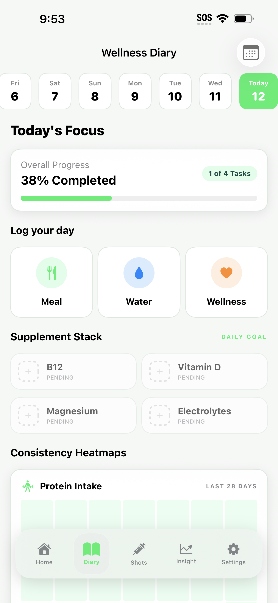
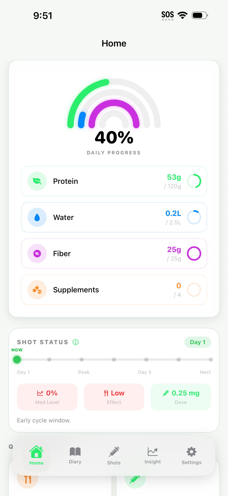
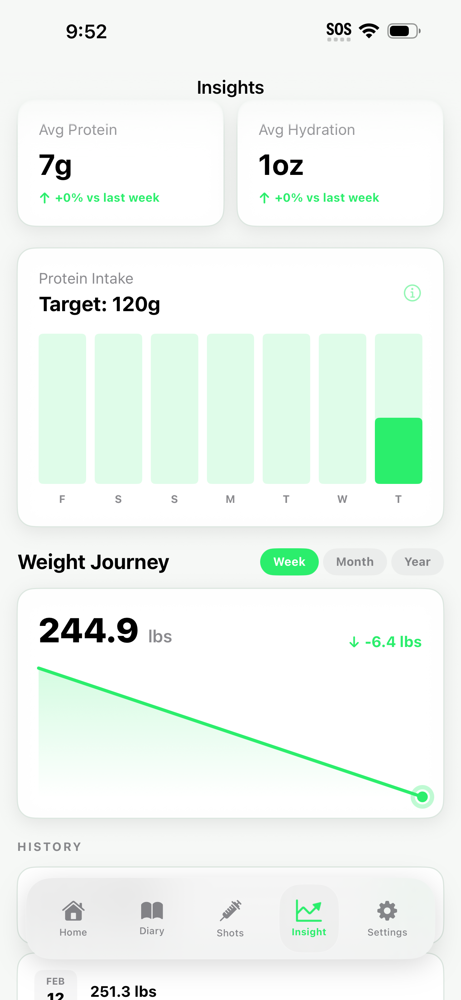
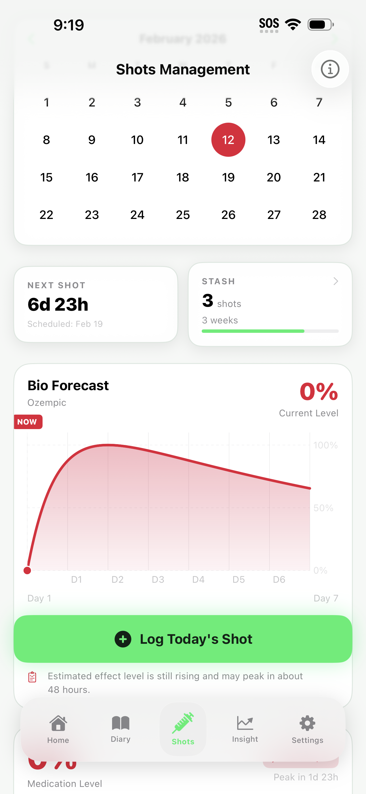
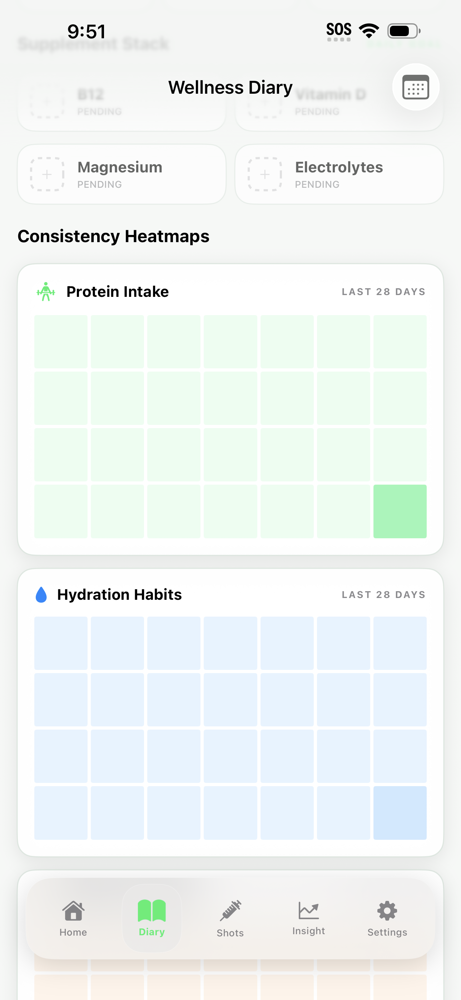
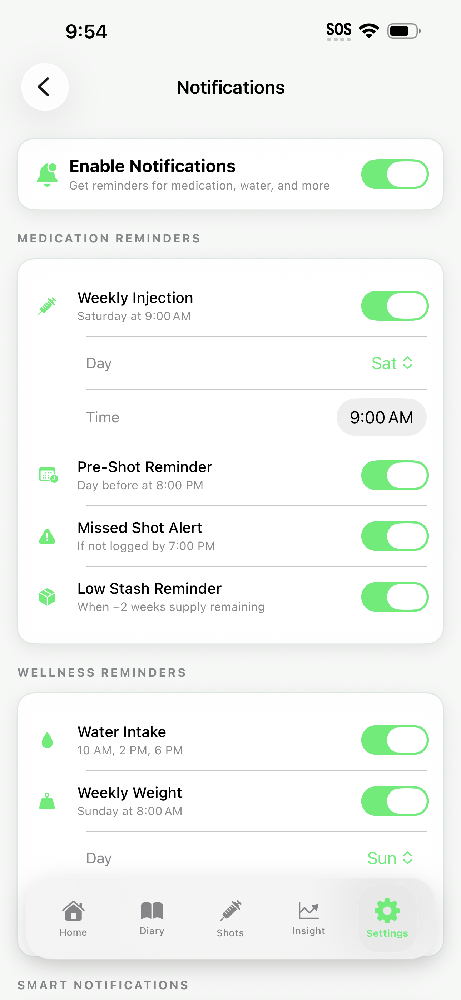
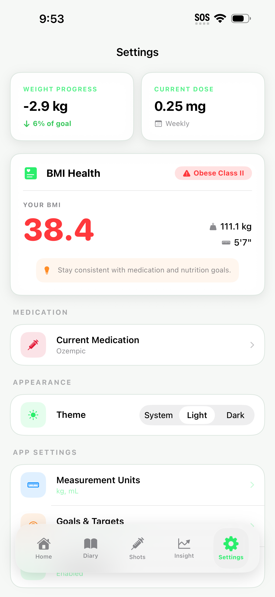

The smart companion for Ozempic, Wegovy, Mounjaro, and Zepbound. Track your medication, optimize nutrition, and monitor your progress with clarity.
Designed with precision. Built for your wellness journey.



Comprehensive toolset for your GLP-1 journey.
Four simple steps to take control of your GLP-1 journey.
Record your dose, injection site, and timing. Quick and easy tracking every time.
Visualize your 7-day medication curve and appetite suppression patterns.
Track weight, BMI, nutrition, and hydration with visual trends and insights.
Get smart reminders for shots, hydration, and daily progress updates.
Every screen designed for clarity and ease of use.




Everything you need to know about NutriGLP.
NutriGLP supports all major GLP-1 and dual GIP/GLP-1 medications including Ozempic (semaglutide), Wegovy (semaglutide), Mounjaro (tirzepatide), and Zepbound (tirzepatide). The app's bio forecast accurately models the pharmacokinetics of each medication.
The Bio Forecast uses pharmacokinetic modeling based on your medication type, dose, and injection schedule to visualize your medication levels over a 7-day period. This helps you understand appetite suppression patterns and plan your nutrition accordingly.
Yes, absolutely. All your medication logs, nutrition data, and health information are stored exclusively on your personal device. We do not maintain a central database of your sensitive data, and we never sell your information to third parties.
NutriGLP offers a 7-day free trial so you can explore all features — including food logging, bio forecasts, shot tracking, and custom reminders. After the trial, a subscription is required to continue accessing premium features.
Yes! NutriGLP includes smart safety warnings that detect if you're trying to log a dose before your scheduled time. This helps prevent schedule disruption and ensures you're following your proper weekly or daily dosing schedule.
No, NutriGLP works completely offline. Since all your data is stored locally on your device, you can log shots, track nutrition, and view your progress anytime, anywhere without an internet connection.
Join thousands tracking their GLP-1 journey with clarity and confidence.
Start Your Free TrialAvailable on iOS • 7-Day Free Trial